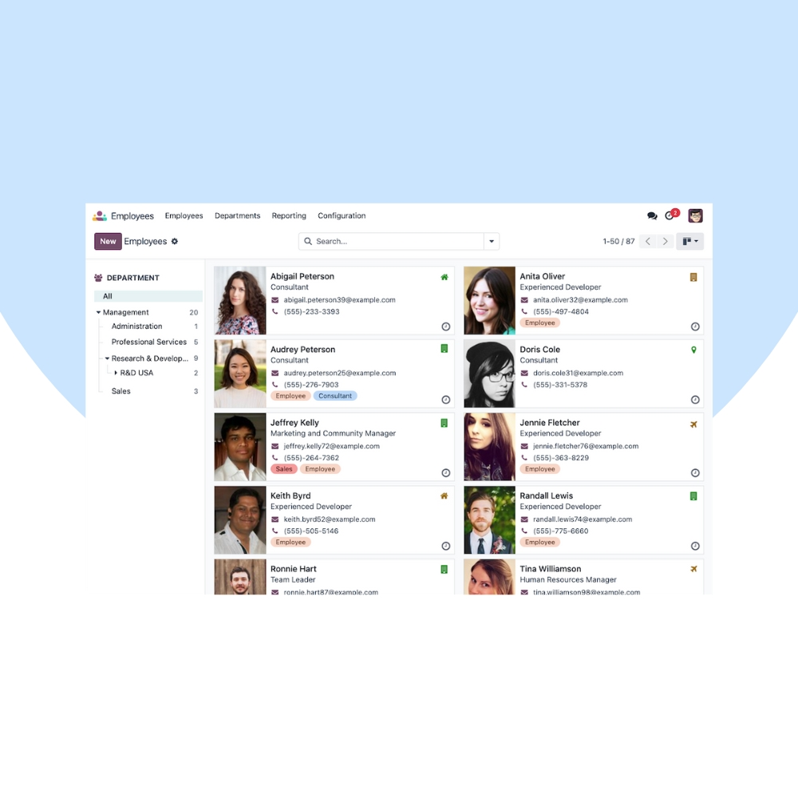
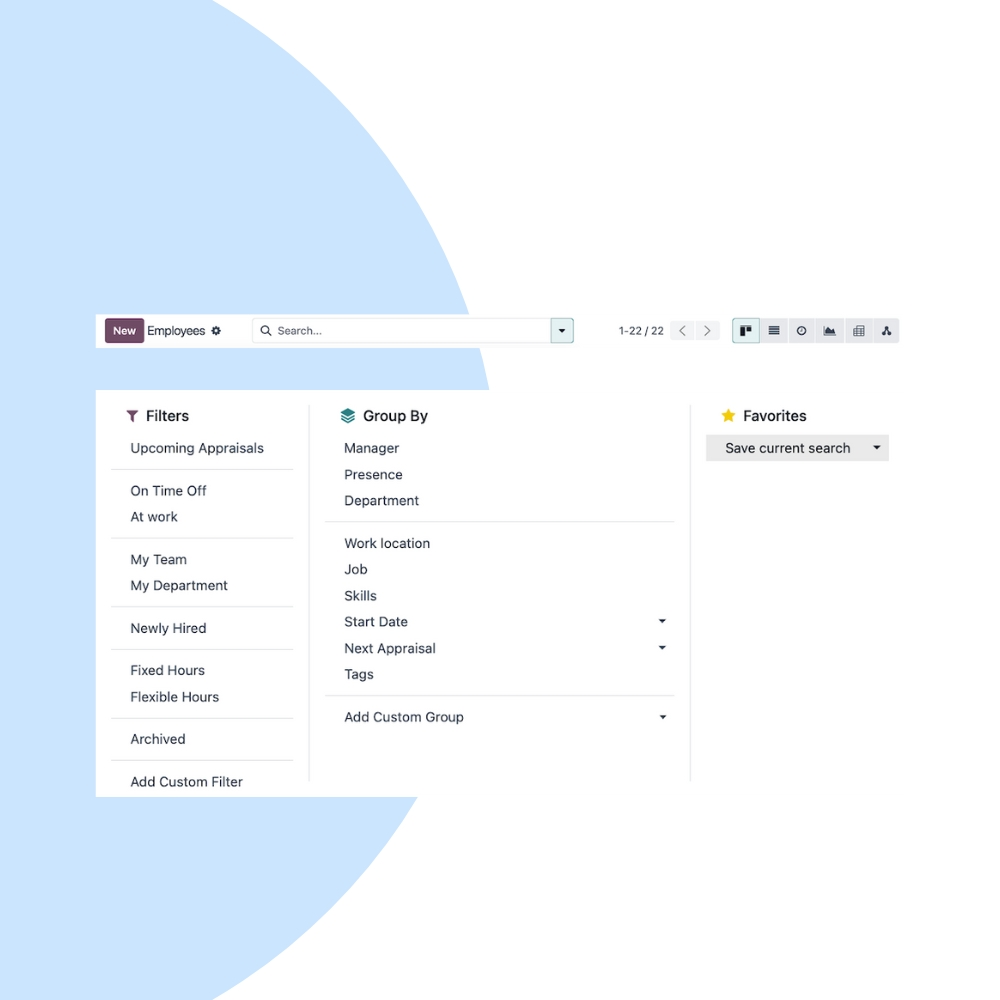
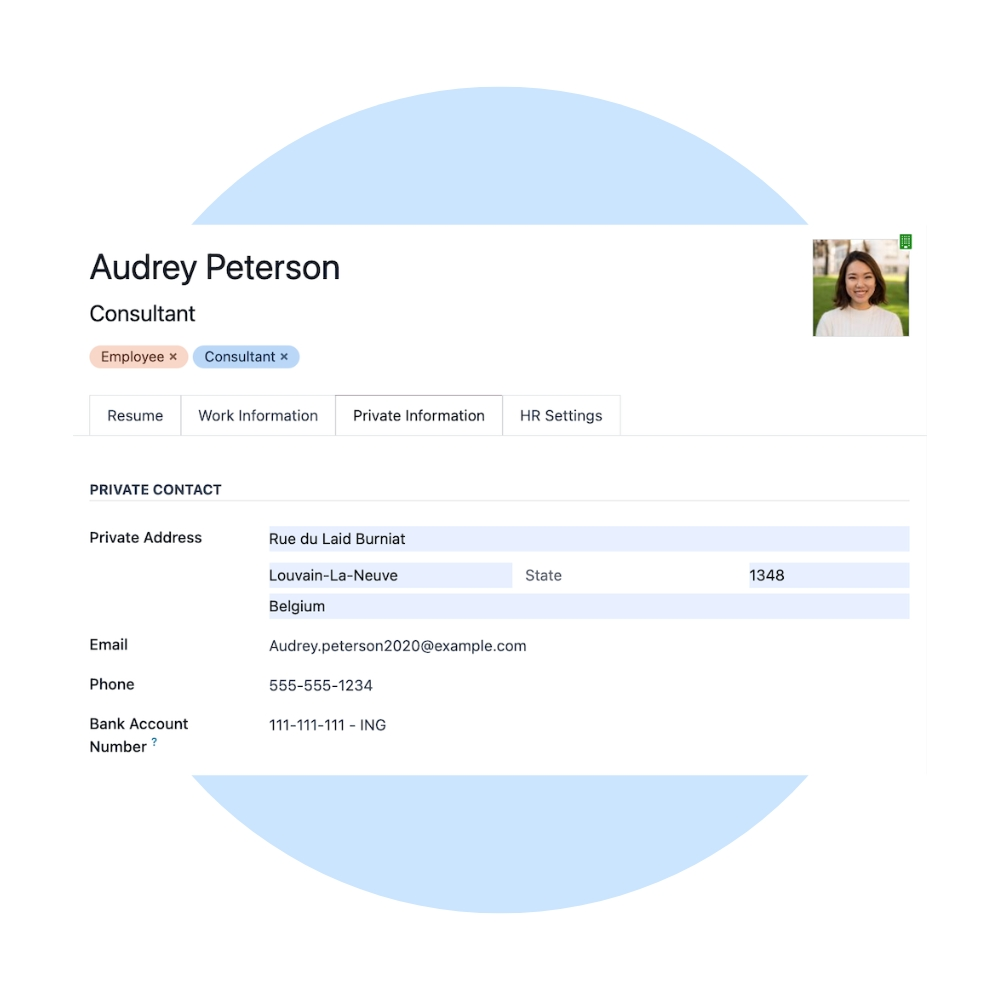

Manage your workforce efficiently with Odoo Employees. We help organizations centralize employee records, organizational structures, and HR information in one secure, easy-to-use system.
We configure Odoo Employees to match your HR policies, organizational hierarchy, and data security requirements. Integrate employee records seamlessly with Payroll, Attendance, Leaves, Recruitment, and Appraisals.


Our implementation ensures a structured HR system, accurate employee data, and smooth integration with all HR and business operations.
All employee information in one secure place.
Visualize reporting lines and team structures.
Store contracts, IDs, and HR documents securely.
Protect sensitive HR data with role-based access.
Works seamlessly with Payroll, Leaves & Attendance.
Employees linked with projects, timesheets & expenses.
We help you continuously optimize HR operations, improve data accuracy, and scale your workforce management as your organization grows.
